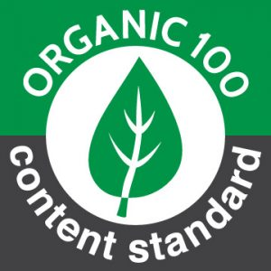

L'industria tessile è uno dei settori più impattanti sull'ambiente, rendendo cruciale l'adozione di abbigliamento ecologico.
Sempre più aziende, riconoscendo l'importanza della sostenibilità,
stanno introducendo collezioni realizzate con materiali rispettosi dell'ambiente,
includendo sia alta moda che abbigliamento da lavoro.
Per assicurare l’autenticità delle informazioni sui capi ecologici, esistono diverse certificazioni:
Adottare abbigliamento ecologico non è più una scelta di nicchia,
ma una necessità per un futuro più sostenibile e rispettoso dell'ambiente.
|  |
|---|
 |
|---|